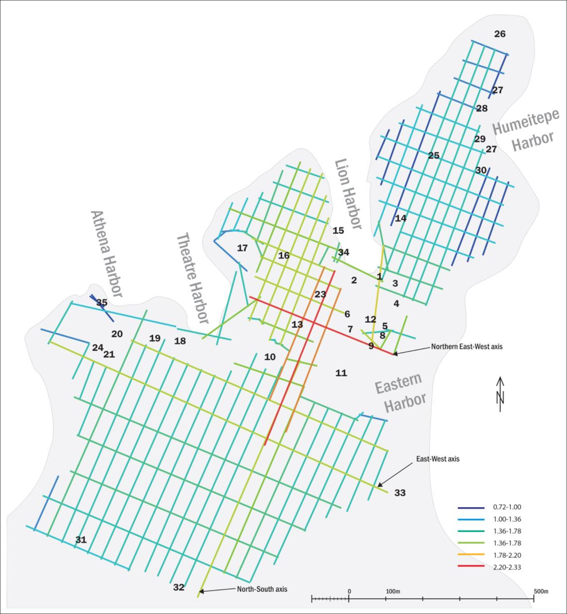
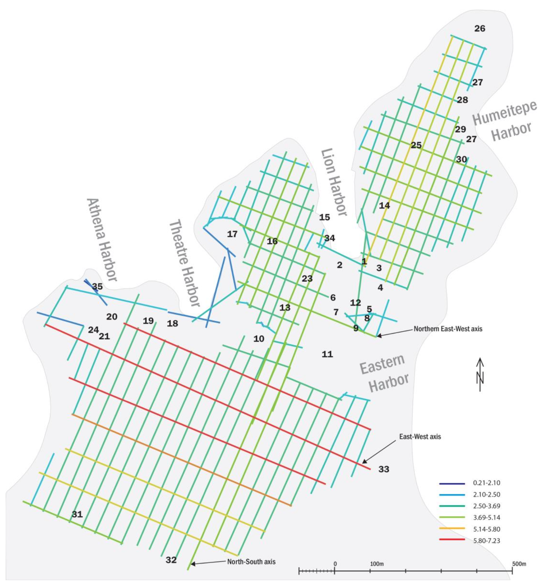

Spatial research / Archaeological interpretation
01 — Miletus / 2023
Reconstructing
Roman Miletus
From archaeological evidence to the spatial logic of an ancient city.
How can the spatial organisation of a city be investigated when much of its urban fabric is no longer visible? This project examines the Roman-period street network of Miletus by bringing together geophysical research, archaeological surveys, historical plans and Space Syntax analysis.

Reading the archaeological record
The street network cannot be read from the visible remains alone. The reconstruction draws on several types of evidence: geomagnetic surveys that reveal buried structures, topographic and magnetic data around the former harbour, and systematic archaeological survey that maps the distribution of architectural ceramics and other finds. Each source records a different aspect of the city and has to be considered in relation to the others.


These figures are reproduced from the thesis, where their original sources are identified. The survey panels in Figure 33 show the distribution of architectural ceramics, terra sigillata and tesserae; they are archaeological survey data rather than a direct street plan.
Reconstructing the city plan
The Roman-period plan was redrawn by synthesising archaeological evidence and published research on the development of Miletus. Weber's detailed account was a particularly important source for understanding changes in the urban layout. Earlier plans and more recent archaeological publications provided additional evidence, including the locations of streets, public buildings, harbour areas and city boundaries. The result is a working reconstruction for spatial analysis, not a claim that every street or building location is certain.

Figure 34. Reconstruction by the author, based principally on Weber (2007, p. 239) and informed by other archaeological publications cited in the thesis, including Maischberger et al. (2009), Herda (2011), Bumke (2011), Brückner et al. (2014, 2017), Niewöhner (2015), Şahin (2014), Huy & Weissová (2020) and Thurn (2020).
Movement potential and spatial configuration
01 — Analytical approachThe purpose of the spatial analysis is to investigate the movement patterns potentially enabled, facilitated or constrained by the physical configuration of the city. Rather than attempting to reconstruct actual pedestrian behaviour, the study examines the spatial opportunities and limitations embedded in the reconstructed urban layout.
02 — InterpretationBy comparing the movement potentials identified through Space Syntax with available historical and archaeological evidence, the analysis explores the extent to which the spatial configuration corresponds with, extends or challenges existing interpretations of urban movement. This approach also makes it possible to consider spatial relationships that may not be directly documented in the historical record.
The analytical results describe configurational properties of the reconstructed urban network, not observed patterns of historical behaviour. They provide an independent perspective from which to evaluate the possible role of spatial organisation in shaping movement through Roman Miletus.
Global and local integration
Axial analysis represents the street system through the fewest and longest lines of sight and movement. Integration measures how easily each line is reached from the others in the network, based on topological steps rather than physical distance.
The global measure compares each street with the whole system. Local measures, here R3 and R2, compare streets within a more limited number of steps. Looking at both scales helps distinguish the routes that connect the city as a whole from those that structure movement within nearby areas.



The global graph highlights the north–south and northern east–west axes as highly integrated within the reconstructed network. At the local scale, the pattern shifts: the east–west axis and groups of streets around Humeitepe become more prominent. These are measures of configurational accessibility, not direct observations of ancient pedestrian traffic.
Movement at different scales
Segment analysis divides the network into individual street segments and measures their relationship to possible journeys through the system. Two measures are used: integration and choice.
Integration indicates the potential of a segment to act as a destination within a chosen radius. Choice indicates how often a segment falls on the shortest routes between other segments, and therefore its potential as a through-route. Comparing radii from 100 to 1,000 metres allows the analysis to consider broader and more local movement scales.

The 1,000 m choice graph identifies the Processional Street and connected routes around the harbour gates and agora as important potential through-routes in the model. The thesis also compares integration and choice at 800, 400, 250 and 100 m radii; the selected figure here illustrates the broader-scale choice result.
From sources to spatial model
Research background
The historical development of Miletus was examined through published plans and archaeological studies. Weber's detailed account was translated and studied alongside earlier plans and later research. This background work helped establish how the urban layout had changed and which evidence could inform a Roman-period reconstruction.
Geophysical surveys, archaeological survey results, excavation data and topographic studies were then compared and synthesised. The street network was redrawn as a consistent spatial model so that it could be examined using the same analytical framework.
Methods used
- Historical plan comparison
- Geophysical and topographic evidence review
- Archaeological survey synthesis
- Roman-period urban reconstruction
- Axial integration analysis
- Segment integration and choice
- Multi-radius comparison
What the model
makes visible.
The analyses suggest that the spatial structure of Roman Miletus was not uniform. Some streets connect larger parts of the reconstructed network, while other routes become more prominent when the analysis is restricted to local surroundings. Segment results also point to the importance of the Processional Street and the central connections between the agorae, theatre area and harbour approaches.
These patterns offer a way to discuss potential accessibility and movement through the city. They remain dependent on the reconstructed street network and on the assumptions built into the analytical model. The results should therefore be read as possibilities supported by spatial configuration, not as direct evidence of actual routes or behaviour in antiquity.
Project based on the Master's thesis, An Evaluation of Space Syntax Methods in Archaeological Context: Case of Miletus (Middle East Technical University, 2023). Thesis record and full text ↗. The thesis is available under CC BY-NC-ND 4.0; third-party images and research figures retain their own source credits and applicable rights. The aerial photograph above is by Tomisti (2011), Wikimedia Commons, CC BY-SA 4.0; image and licence details ↗.